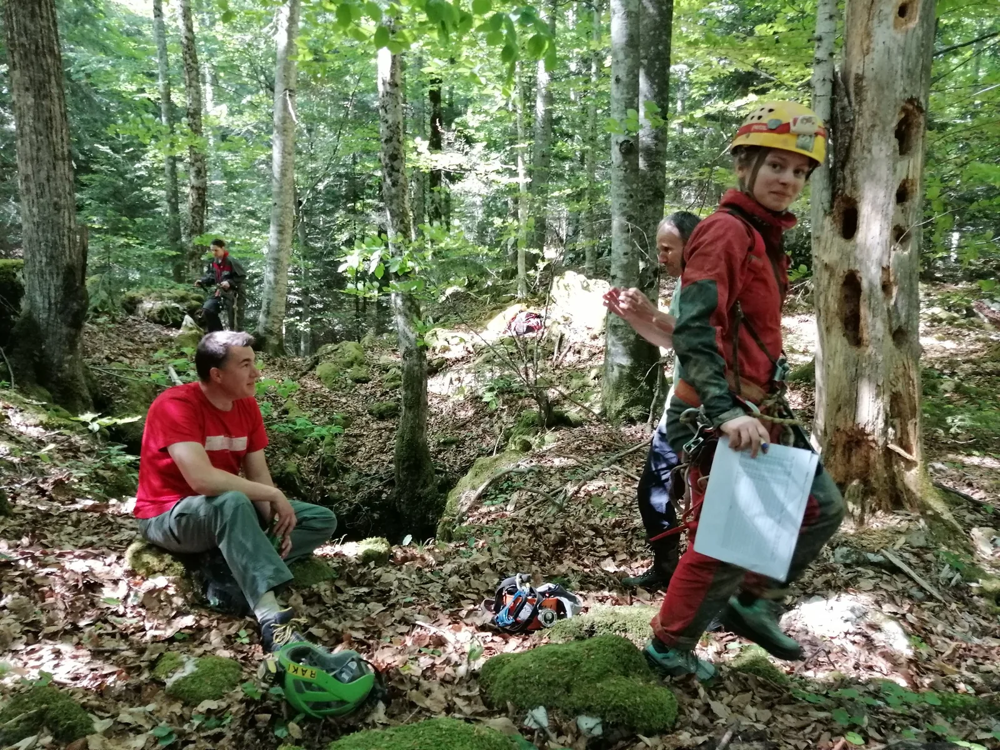

Započela speleološka istraživanja u NP Plitvička jezera
U sklopu projekta kojeg je raspisala Javna ustanova NP Plitvička jezera, i uz pomoć LIDAR tehnologije, veći broj speleoloških društava i klubova započeo je sa istraživanjem i evidentiranjem speleoloških objekata na…

Nakon što je uslijedilo popuštanje epidemioloških mjera, za vikend 1. svibnja 2020. uslijedila je prva speleološka invazija na područje NP Plitvička jezera. Gotovo sto speleologa iz više udruga; SO PDS Velebit, SO HPD Željezničar, Speleo Osmica, SD Karlovac, Ursus spelaeus, Estavela, SK Samobor, SK Ozren Lukić, SD Veles, Freatik, Breganja,... rasprostrlo se prema projektu dodijeljenim područjima istraživanja. LIDAR skeniranjem uz poznate, ustanovljen je određeni broj do sada nepoznatih speleoloških objekata (kategoriziranih po vjerojatnosti – niska, srednja i visoka vjerojatnost), a svaka udruga prijavljena u projektu dobila je područje istraživanja sa otprilike jednakim brojem potencijalnih objekata).
Nakon par mjeseci anticovid kampanje #ostanidoma, odlazak u prirodu zbog speleologije i još k tome na Plitvice očito je bio pravi i jedva dočekani psihoterapeutski doživljaj. Unatoč najavama na Facebooku, zapravo se i nije znalo koliko je društava i speleologa tog dana potegnulo put Plitvica, sve dok se nisu počeli slučajno susretati po parkiralištima i šumi. Tako se i došlo do ovog broja od stotinjak speleologa, broja kojeg obično bilježimo na većim ekspedicijskim istraživanjima i to kroz trajanje od otprilike 2 tjedna, a ne za jedan vikend. Nije trebalo dugo čekati na prve objave i fotografije na Facebooku, dio kojih vam prenosimo i ovdje. Vikend istraživanja se intenzivno nastavljaju pa vjerujemo da će NP Plitvička jezera do završetka projekta imati upotpunjenu bazu – katastar speleoloških objekata na svome području. Rock on. :)
O projektu:
Javna ustanova NP Plitvička jezera 1. siječnja ove godine objavila je javni poziv za sudjelovanje u projektu „Istraživanje i otkup standardiziranih podataka o speleološkim objektima u Nacionalnom parku Plitvička jezera“. Standardizirani podaci odnose se na nacrte, speleološke zapisnike i fotografije. Područje Nacionalnog parka Plitvička jezera je jedno od najslabije speleološki istraženih područja u Republici Hrvatskoj što je jasno vidljivo u Katastru speleoloških objekta Republike Hrvatske. Na širem području Nacionalnog parka (do približno 500 metara od granica) do sada je utvrđeno postojanje 114 speleoloških objekata, a preliminarni rezultati analize LIDAR podataka pokazuju postojanje još stotine novih. Navedeni speleološki objekti, uz određene iznimke, nisu speleološki istraženi. Speleološke objekte (špilje i jame) istražuju brojne speleološke udruge. Provođenjem poslovne suradnje sa samo jednom od udruga ne bi se dobili željeni rezultati zbog velikog broja objekata te bi takva istraživanja trajala desecima godina.
Raspisivanjem ovog Javnog poziva biti će omogućen istovremen rad više udruga na istraživanju novih speleoloških objekata, a što je uobičajeno u speleologiji te je temelj Katastra speleoloških objekata Republike Hrvatske koji vodi Ministarstvo zaštite okoliša i energetike. Svakih šest mjeseci, od dana objavljivanja ovog Poziva, do isteka trajanja projekta, provest će se otkup standardiziranih podataka o speleološkim objektima.
Dosad je na području Nacionalnog parka istraženo oko 100 speleoloških objekata, od kojih je najdulja špilja Golubnjača (u kanjonu Korane) duga 165 m, a najdublja jama je Čudinka, duboka 203 m.
Godine 1964. unutar Nacionalnog parka Plitvička jezera, tri špilje smještene u kanjonu Donjih jezera i rijeke Korane, proglašene su geomorfološkim spomenicima prirode, a to su:
Špilja Šupljara – nastala urušavanjem dna ponikve, odnosno svoda špilje. Ima tri dvorane spojene prostranim hodnikom, ukupne dužine 68 m. U jednom hodniku nekoliko je gomoljastih ukrasa kao i jedan stalagnat, špiljski stup nastao spajanjem stalaktita i stalagmita. Jedina je špilja otvorena za posjećivanje.
Crna pećina (Vile jezerkinje) – naziv Crna dobila je zbog nakupina guana (šišmišji izmet), a poznata je i pod imenom Pećina vile jezerkinje, zbog sigaste tvorevine koja je podsjećala na vilu. Sastoji se od donje i gornje dvorane, ukupne dužine 105 m.
Špilja Golubnjača – ima veliko predvorje i dvije dvorane ukupne dužine 165 m, te se odlikuje bogatstvom špiljskih ukrasa. Špilja je u svrhu očuvanja, kao i Crna pećina, zatvorena za posjećivanje.Galerija fotografija (Facebook): [gallery ids="3875,3876,3877,3878,3879,3880,3881,3882,3883,3884,3885,3886,3887,3888,3889,3890,3891,3892,3893,3894,3895,3896,3897" type="rectangular"]